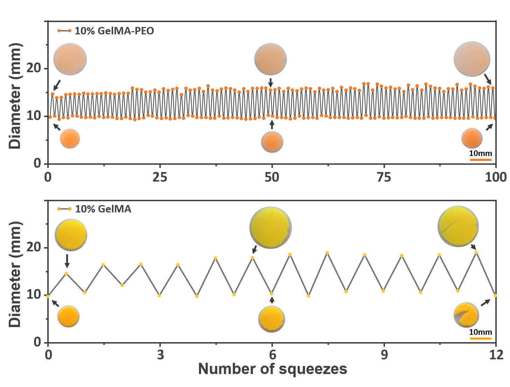
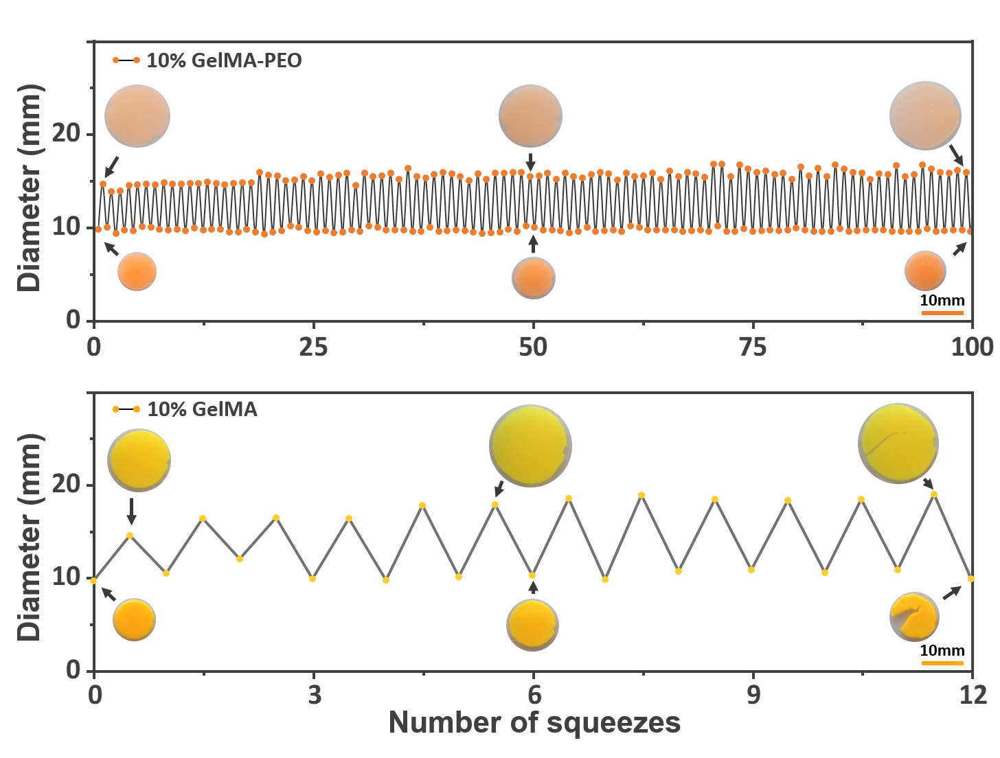

Handheld Bioprinter
Injectable Hydrogel, Skin Repair
This project was conducted at Harvard Medical School. A self-made handheld printer will be used for skin repair. We developed a novel GelMA/PEO hydrogel to be printed onto the skin damaged area. Sepcifically, the hydrogel has superior properties, such as shape memory, injectable, toughness, as shown on the left, and good cell ingrowth, etc. See published articles[1][2].

 
